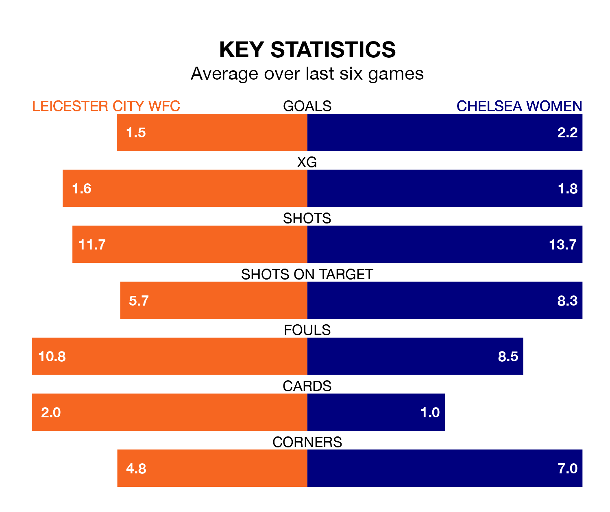

Chelsea Women travel to the King Power Stadium for Sunday's late match against Leicester City WFC looking to bounce back from defeat last time out in the FA Women's Super League.
The Blues, who sit second in the league after 14 games, fell to a 1-0 home defeat to Manchester City Women on February 16.
They face a Leicester City WFC side who picked up a win in their last match, a 5-2 victory against Bristol City Women, and who sit seventh in the table.
With 41 goals in 14 games so far this season, Chelsea are the league's highest scorers with 2.9 goals per game. And they are conceding fewer than average, letting in 13 goals at a rate of 0.9 per game.
Leicester City WFC, meanwhile, are below average scorers, with 1.5 goals per game, compared to a league average of 1.6. They have conceded 1.9 goals per game.
In Lauren James, the Blues have one of the league's most on-form strikers so far this season. She has notched 12 goals in 13 appearances, to sit second in the scoring charts.
Her goal rate of one every 80 minutes is much quicker than that of Jutta Rantala, the home side's top scorer with a goal every 210 minutes, and a total of five goals in 14 games.
In the last 10 years, Leicester City WFC and Chelsea have played each other on six occasions. Chelsea won all of them.
On average, Leicester City WFC scored 0.3 goals and the Blues 6.2 in those matches.
Their last meeting was on November 26, when Chelsea won 5-2 at home.
Leicester City WFC are in mixed form in the FA Women's Super League, with two wins and two draws from their last six games.
With four wins and two losses over that period, the visitors' form is better – they have taken 12 points from 18, compared to Leicester City WFC's eight.
Updated: 10:08 (UTC), 23/02/24